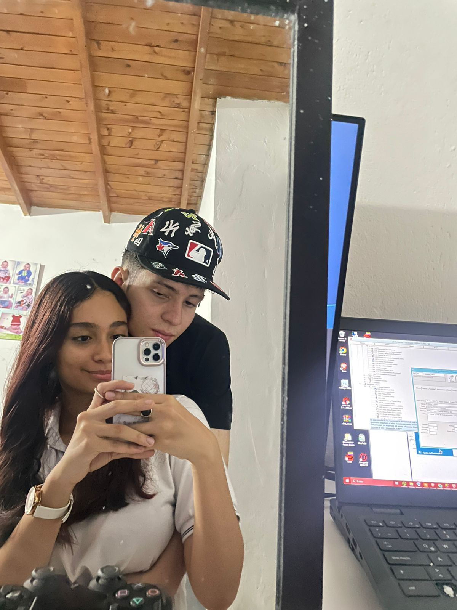
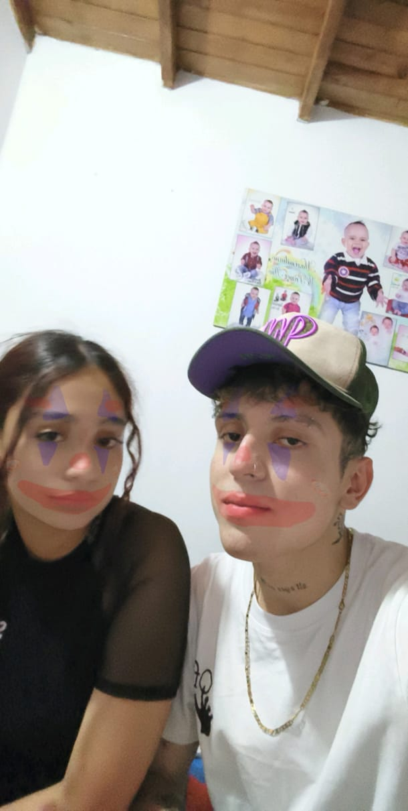

Desde que llegaste a mi vida, todo cambió. Han pasado solo dos meses, pero siento como si te conociera de toda la vida. Me haces sentir amado, especial, feliz y completo, siento que eres lo mas bonito que tengo y eres unica e inigualable. 👫❤️
Esto es solo una muestra de lo bonito que hemos vivido juntos.
 Quiero seguir construyendo contigo, paso a paso. No importa si somos jóvenes o si el mundo dice que no se puede. Yo sí creo que contigo es posible todo.
Quiero seguir escribiendo esta historia a tu lado. Cada día, cada locura, cada beso y cada abrazo. Te amo, Ana.
Nunca cambies tu forma de ser, tus cosas bonitas, tus ocurrencias, tus rarezas, tu forma de amar, tu forma de ver las cosas, no cambies nada mi vida, me enamore de lo que eres asi que, sin importar que, no lo cambies nunca porque asi te amo.